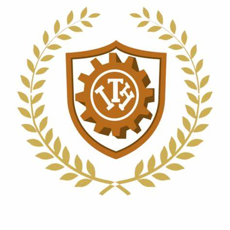

INICIO
HISTORIA
ESTILO MUSICAL
DATOS INTERESANTES
INTEGRANTES
RECONOCIMIENTOS Y PREMIOS
Artic Monkeys se formo en 2002, los miembros originales son Alex turner (voz y guitarra) Jamie Cook (guitarra) Andy Nicholson (bajo) y Mott Helders
Despues de un tiempo, Nicholson dejo la banda y fue remplazado por nick O' Malley. Los Arctic Monkeys fueron considerados como una de las primeras bandas en hacerse conocidas al público gracias a la difusión de sus canciones por Internet, por lo cual se los catalogó como «la banda que pudo haber cambiado el mercado de la música».
Su album debut, Whatever People Say I Am, That's What I'm Not,fue lanzado en 2006 y recibio criticas muy positivas.Se convirtio en el album mas vendido de la historia del Reino unido, Ganó el premio al Mejor Álbum Británico en los Brit Awards 2007. El segundo álbum de la banda, Favourite Worst Nightmare (2007), contó casi con el mismo éxito, ganando también el premio al Mejor Álbum Británico en los Brit Awards 2008. Sus siguientes trabajos serían Humbug (2009), un proyecto más experimental, y Suck It and See (2011).
Cambio de sonido y enfoque más experimental (2008-2010)
Luego de un breve hiato tomado por la banda, en el cual Alex Turner grabó material con su dúo junto a Miles Kane llamado The Last Shadow Puppets, la banda empezó a grabar la mitad del nuevo álbum en el estudio desértico Rancho de la Luna con Josh Homme de Queens of the Stone Age como productor en el otoño del 2008, y la otra mitad junto a James Ford en unas sesiones en Nueva York en la primavera del 2009. Durante un tour de enero en Nueva Zelanda y Australia, la banda debutó en vivo las canciones "Crying Lightning", "Pretty Visitors", "Dangerous Animals" y "Potion Approaching" (conocida en ese momento como "Go-Kart"). Matt Helders reveló más tarde en un video-vlog que el álbum consistiría de 14 canciones y que Alex se quedaría en Nueva York para supervisar la mezcla del álbum. Sin embargo, el tracklist final solo consistió de 10 canciones.[56]
La fama mundial de la banda aumentaría gracias al lanzamiento de AM (2013), su quinto disco, y el que obtendría mayor éxito comercial. AM se convirtió en su segundo álbum en entrar en el Top 10 del Billboard en Estados Unidos, siendo también certificado platino en ese país. En los Brit Awards 2014 la banda consiguió por tercera vez el premio al Mejor Álbum Británico. Su sexto álbum, Tranquility Base Hotel & Casino (2018), se alejó de los sonidos tradicionales de la banda, enfocándose en sonidos basados principalmente en el piano, e incorporando rock psicodélico, space age pop, lounge y glam rock, además de elementos de jazz. Con su séptimo álbum, The Car (2022), seguiría la línea experimental del anterior álbum con elementos del rock sinfónico, incorporando instrumentos de cuerda. Recibió una nominación a Mejor Álbum de Música Alternativa en los Premios Grammys 2019, su segunda en la categoría después de Whatever People Say I Am, That's What I Am Not.